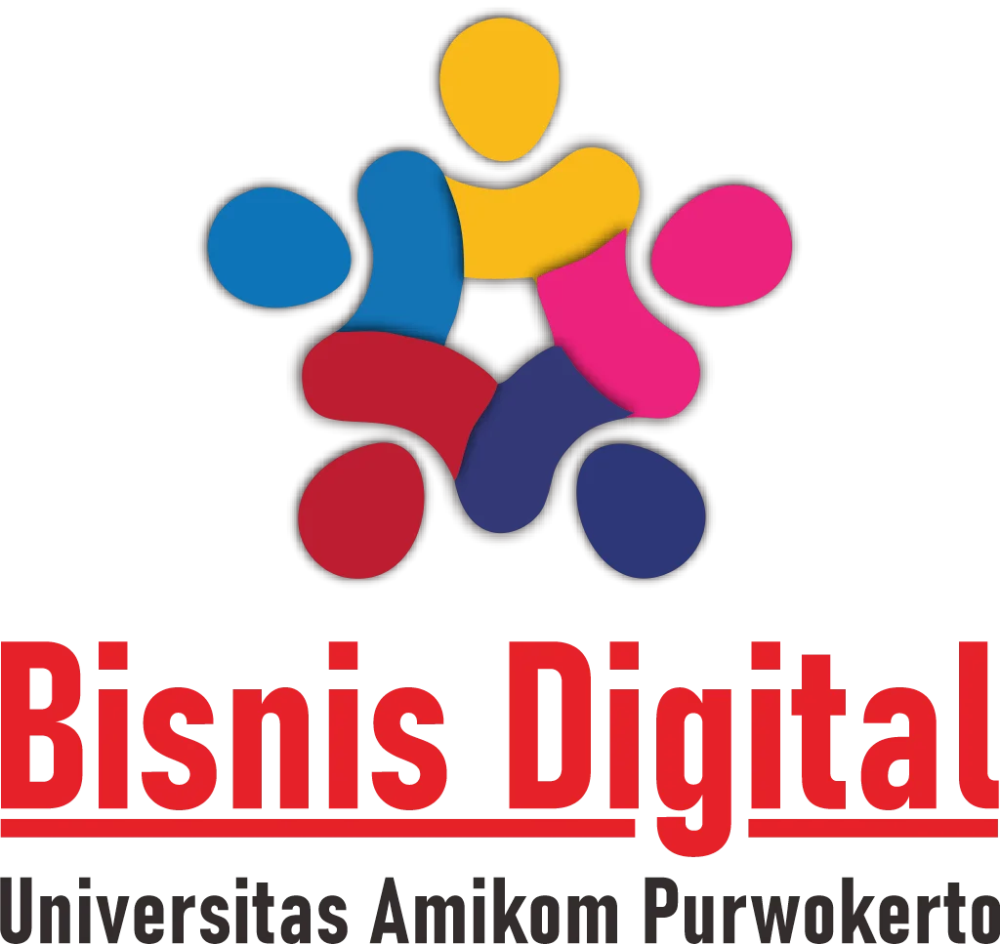

Tentang Kami
Salah satu perguruan tinggi swasta berbasis teknologi informasi dan bisnis di Purwokerto, Jawa Tengah. kampus berbasis IT sejak 2005.

Mengapa Memilih Kami?
- Kampus Berbasis Technopreneur
- Fasilitas Modern & Industri Kreatif
- Ekosistem Kampus Merdeka
Seputar Informasi
- Fakultas dan Prodi
- Hubungi kami melalui WhatsApp
- Datamg langsung ke kampus
Fakultas dan Prodi
| Fakultas | Prodi |
|---|---|
| Fakultas Ilmu Komputer | Informatika,Sistem Informasi,Teknologi Informasi |
| Fakultas Bisnis dan Ilmu Sosial | Bisnis Digital,Ilmu Komunikasi,Manajemen,Hukum |
| Fakultas Ilmu Kesehatan | Kebidanan dan Fisioterapi |

Hubungi Kami
Jl. Letdjen Pol. Soemarto No. 127
Banyumas, Jawa Tengah
Lokasi Kami
Temukan lokasi usaha Sekar Arum di Banyumas.